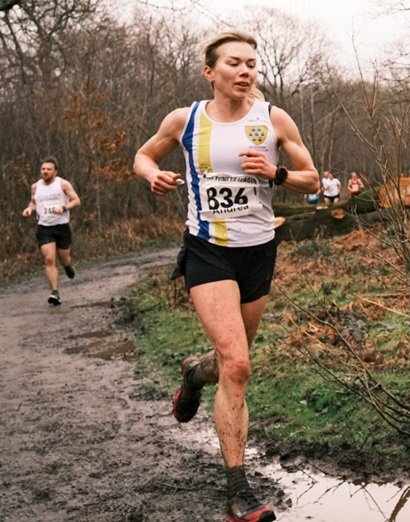
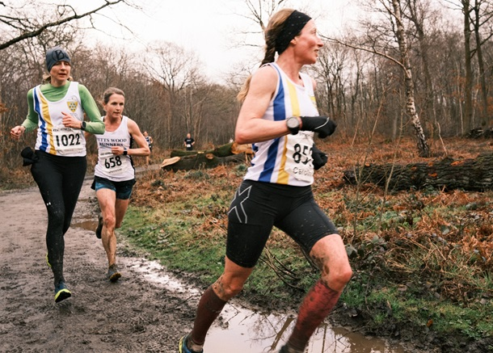
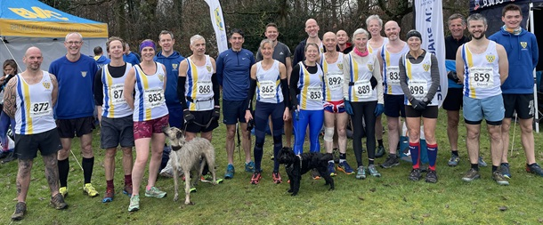

The final race in the Kent Fitness League 23/24 series took place in Blean Woods at Rough Common near Canterbury on Sunday Feb 25th, writes Jim Knight. After days of heavy rain the course was challenging, with flooded paths and deep mud.
Twenty-six Sevenoaks AC runners made the journey, and once again, the SAC women’s team excelled, coming 3rd, behind strong teams from Petts Wood Runners and Canterbury Harriers and securing second place in the 7-race series.
In addition, the Sevenoaks women have a number of individual age group champions:-

Andrea Berquez, overall runner-up and W35 champion
Joanna Rodda, F45 champion. (Caroline Fenwick, runner-up)
Catherine Linney, F50 champion
The other scorers in the team at Rough Common were Nicola Glover and Bridgit Weekes.
The men’s team was weakened by the absence of key runners, but still managed a highly creditable 5th place on the day and 5th place in the series. The scoring team was Ed Saunders, Darius Sarshar, Harvey Taylor, Seb Naughton, David Killpack, Andy Ashlee, Mike McCarthy, and Chris Desmond.
The combined team came in 5th place on the day and 5th in the series, just one point behind Canterbury Harriers and two points behind Paddock Wood. The full SAC results were as follows:
| Ov Pos | Lg Pos | Bib | Runner | Age | Time | Club | Score | Rtg | # |
|---|---|---|---|---|---|---|---|---|---|
| 23 | 23 | 887 | Edmund Saunders | 41 | 33:10 | Sevenoaks AC | V40:1 | 92.17 | 27 |
| 54 | 52 | 886 | Darius Sarshar | 54 | 34:54 | Sevenoaks AC | V50:1 | 81.85 | 16 |
| 62 | 3 | 836 | Andrea Berquez | 38 | 35:25 | Sevenoaks AC | V35 | 98.69 | 12 |
| 75 | 7 | 852 | Caroline Fenwick | 46 | 36:29 | Sevenoaks AC | V45 | 96.08 | 12 |
| 76 | 8 | 1022 | Joanne Rodda | 47 | 36:31 | Sevenoaks AC | F1 | 95.42 | 5 |
| 78 | 70 | 893 | Harvey Taylor | 19 | 36:33 | Sevenoaks AC | M1 | 75.44 | 15 |
| 84 | 75 | 878 | Sebastian Naughton | 49 | 36:46 | Sevenoaks AC | V40:2 | 73.67 | 17 |
| 89 | 13 | 854 | Nicola Glover | 36 | 37:10 | Sevenoaks AC | F2 | 92.16 | 15 |
| 92 | 79 | 859 | David Killpack | 38 | 37:21 | Sevenoaks AC | M2 | 72.24 | 10 |
| 95 | 82 | 846 | Chris Desmond | 61 | 37:34 | Sevenoaks AC | V60 | 71.17 | 89 |
| 110 | 93 | 871 | Michael McCarthy | 58 | 38:30 | Sevenoaks AC | V50:2 | 67.26 | 30 |
| 124 | 19 | 865 | Catherine Linney | 54 | 39:19 | Sevenoaks AC | NSBLS | 88.24 | 49 |
| 127 | 108 | 832 | Andrew Ashlee | 54 | 39:28 | Sevenoaks AC | M3 | 61.92 | 33 |
| 141 | 117 | 835 | Adam Bates | 40 | 40:20 | Sevenoaks AC | NS | 58.72 | 7 |
| 142 | 118 | 874 | Andrew Monk | 47 | 40:20 | Sevenoaks AC | NS | 58.36 | 11 |
| 163 | 135 | 849 | Graham Dwyer | 51 | 41:03 | Sevenoaks AC | NS | 52.31 | 25 |
| 169 | 140 | 900 | Daniel Witt | 49 | 41:19 | Sevenoaks AC | NS | 50.53 | 72 |
| 194 | 158 | 868 | Jonathan Marsh | 64 | 42:22 | Sevenoaks AC | NS | 44.13 | 11 |
| 197 | 161 | 862 | Leonard Lai King | 44 | 42:27 | Sevenoaks AC | NS | 43.06 | 17 |
| 209 | 171 | 897 | Duncan Warwick-Champion | 59 | 43:12 | Sevenoaks AC | NS | 39.50 | 26 |
| 217 | 41 | 853 | Vanessa Gilmartin | 48 | 43:43 | Sevenoaks AC | NSBLS | 73.86 | 33 |
| 234 | 47 | 883 | Sarah Philpott | 45 | 44:36 | Sevenoaks AC | NSBLS | 69.93 | 6 |
| 240 | 190 | 872 | Nicholas Mileham | 43 | 44:43 | Sevenoaks AC | NS | 32.74 | 7 |
| 266 | 63 | 898 | Bridgit Weekes | 65 | 46:20 | Sevenoaks AC | V55 | 59.48 | 25 |
| 351 | 108 | 889 | Sarah Shewell | 64 | 53:07 | Sevenoaks AC | NS | 30.07 | 128 |
| 405 | 273 | 892 | Lionel Stielow | 75 | 1:00:18 | Sevenoaks AC | NS | 3.20 | 27 |
{kind=link}

The full results are here.
Kent Fitness league is one of the highlights of SAC’s season, thanks to the energetic team captains, Pauline Dalton (8th W55) and Dan Witt (79th M45) and Duncan Warwick-Champion with his high-decibel cheering and home-made cookies at the finish. There is a great team spirit despite the wet and windy conditions (Allhallows), water-filled dykes (Minnis Bay), and deep, deep mud (Rough Common). As one runner said, ”I loved every muddy moment of it. Thanks for all the cheering support, camaraderie and cookies. I’m very much looking forward to the next season”.

The Kent Fitness League is a series of cross-country races between the 18 registered Athletics Clubs in Kent. Any number of club members can compete, but 13 are needed to score in the team competition – 8 men (of whom one must be aged 60+, two must be 50+ and two 40+) and 5 women (of whom one must be aged 55+, one 45+ and one 35+).
Action photos kindly provided by